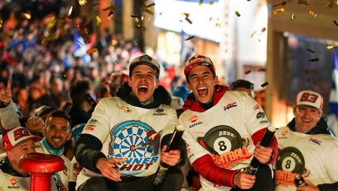

Duo Marquez Rayakan Pesta Gelar Juara di Kampung Halaman
Olahraga | 10 November 2019 | 14:35 WIB
Hasil manis berhasil diraih oleh pasangan kakak-adik, Marc Marquez dan Alex Marquez, pada musim 2019 ini. Alex berhasil meraih menjadi kampiun di ajang Moto2 2019, sementara sang kakak menyegel gelar juara keenamnya di kelas MotoGP pada tahun ini.
Mendapati hasil manis itu, Marquez bersaudara pun menggelar pesta juara saat kembali ke kampung halamannya, Cervera, Spanyol. Pesta gelar juara Alex serta Marquez pun berlangsung sangat meriah.
Kepulangan dua juara itu disambut semarak oleh masyarakat Cervera. Bendera berkelir merah dan biru menghiasi jalanan-jalanan di Cervera. Warna biru mewakili Alex, sementara merah untuk The Baby Alien –julukan Marquez. Kedua warnanya mewakili tim masing-masing.
Beberapa atribut pun turut digunakan Marquez bersaudara dalam pesta tersebut. Marquez membawa bola hitam bertuliskan angka delapan yang melambangkan jumlah gelar juara yang telah berhasil diraih oleh sang pembalap sejauh ini di pentas balap motor grand prix.
Sementara itu, Alex membawa panah dart. Dalam atribut tersebut, terdapat angka 73 yang merupakan nomor motor balap Alex. Raut wajah gembira pun terlihat jelas di raut wajah Alex serta Marquez. Hal ini bisa terlihat dalam beberapa foto yang diunggah keduanya di akun media sosial masing-masing.
Di akun Twitter Marquez, @marcmarquez93, ia menuliskan rasa gembiranya atas pesta juara yang berlangsung begitu meriah tersebut. Ia tutur mengucapkan terima kasih atas animo besar warga dalam pesta tersebut.
“Luar biasa merayakan dua kejuaraan dunia, lagi! Terima kasih kepada semua orang yang telah datang ke Cervera!” cuit Marquez dalam akun Twitter pribadinya.